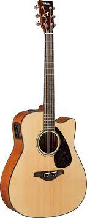

I play the
French Horn
and
Guitar

When I was younger I made many regional honors bands on French Horn, such as New Jersey Regional Band
Link to NJSMA website
I mainly just play guitar for fun
Go to back to my first page about me!!!!